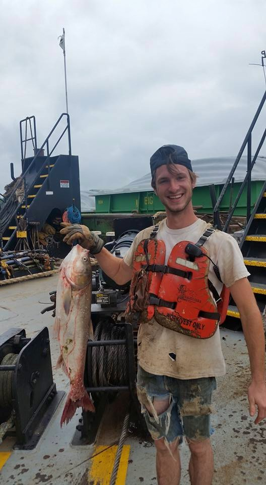

Before Code: life on a boat
I started on a river boat May 2012. I thought it'd be a wonderful way to have a Tom Sawyer like adventure and get paid for it also. An adventure it was! I went out on the mighty Mississippi weighing 120 pounds wet. I was grossly undersized for riverboat life. Due to Ego and Stupidity I was determined to make it work. I eventually worked my way up to mate(the highest deckhand) on a boat named "Ray A. Eckstein". Always in the back of my mind thinking how I'd kill to go back to school to work with computers. My last 28 day hitch on the boat was exhausting, more mentally then physically and I Finally had enough.
CS50x comes to those who are fed up

Searching for ways off the boat, I came across LaunchCode®. Willing to help self learners get a job in tech. LaunchCode was at the time taking applications for a program called LC101 starting in a few months. I wasnt't satisfied with waiting a few months, I sought something more instant gratification like. I found CS50x! I quit the boat and started hammering away at CS50x.